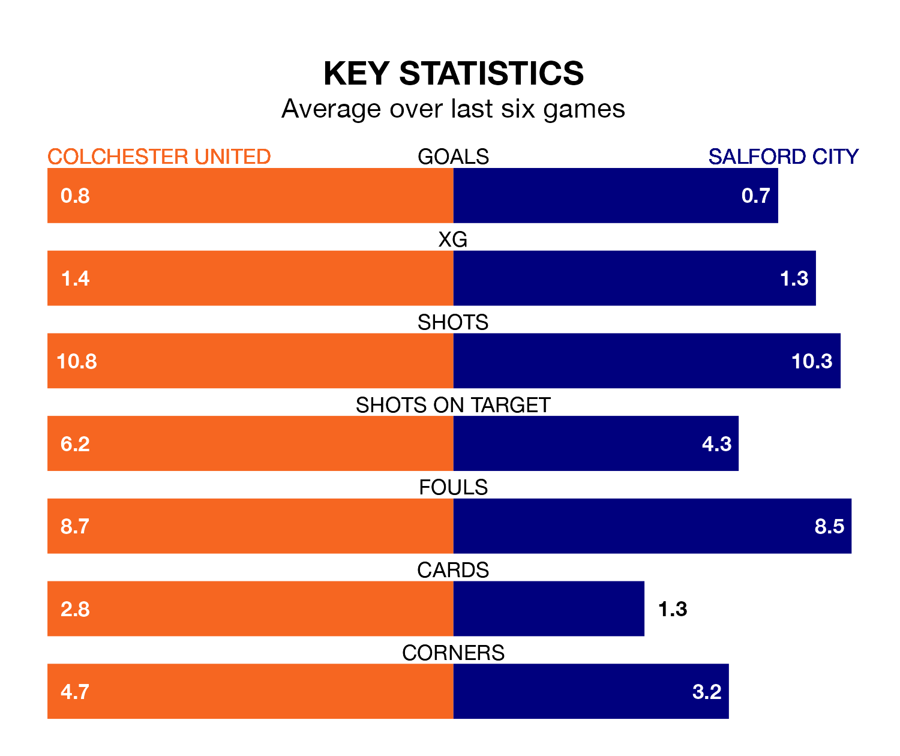

Colchester United welcome Salford City to the JobServe Community Stadium on late Friday looking to pick up points to end their five-game losing streak.
Colchester's struggles have left them with just one point from their last six EFL League Two matches, while their opponents have earned three from a possible 18.
Colchester are 22nd in the table after 22 games, of which they have won six and drawn two, earning 20 points.
Salford are two places ahead of United in 20th, with six wins and five draws putting them on 23 points.
In Matt Smith, City have one of the league's most on-form strikers so far this season. He has notched 14 goals in 21 appearances, to sit second in the scoring charts.
His goal rate of one every 121 minutes is quicker than that of Joseph Taylor, the U's's top scorer with a goal every 185 minutes, and a total of nine goals in 21 games.
With 30 goals in 22 games so far this season, the home side are scoring at below the league average rate with 1.4 goals per game. And they are conceding more than average, letting in 44 goals at a rate of 2.0 per game.
The Ammies are also below average scorers, with 1.4 goals per game, compared to a league average of 1.5. They have conceded 1.6 goals per game.
In the last three years, Colchester and Salford have played each other on six occasions. Colchester won three of them, Salford one, and they drew twice.
On average, the U's scored 1.0 goal and the Ammies 0.5 in those matches.
Their last meeting was on April 15, when Colchester won 1-0 away.
Colchester's last match was on Saturday, a 2-1 loss against Wrexham, with Jayden Seurier getting the goal for the U's.
Salford drew 0-0 with AFC Wimbledon last time out, also on Saturday.
Friday's match will be refereed by Will Finnie, who has taken charge of six EFL League Two games so far this season, issuing one red card and booking 12 players. He has not awarded any penalties.
The last Salford game Finnie refereed was the 1-0 loss away at Morecambe on September 2. He is yet to oversee a match featuring Colchester this season.
Updated: 15:16, 21/12/23